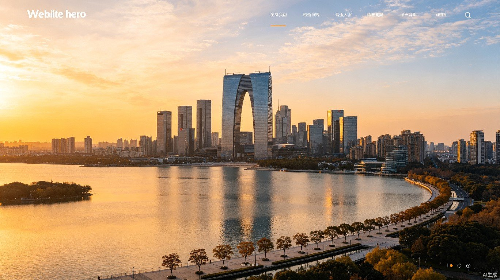
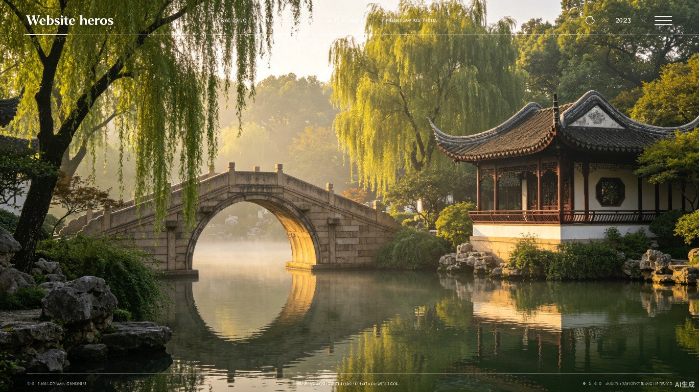
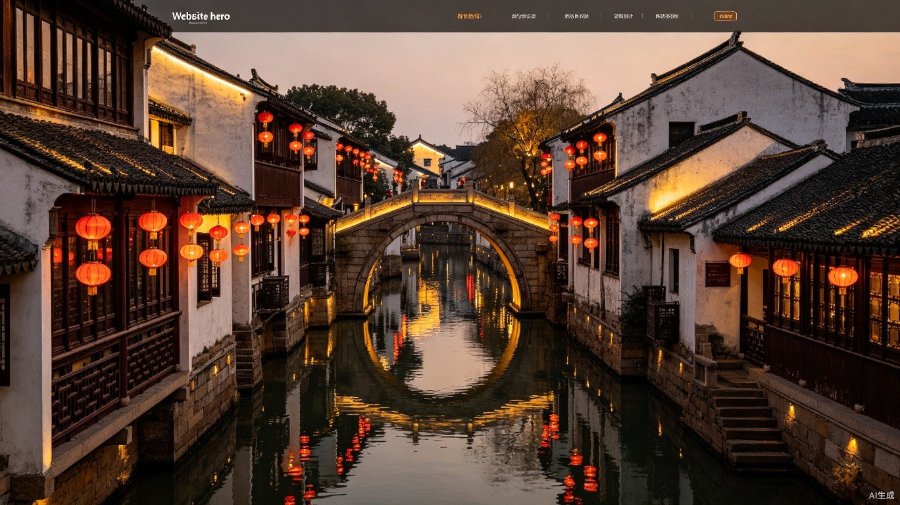

Suzhou Image Candidates
Review each image and let me know which ones you'd like to use on the website.

1. Cityscape — Modern Suzhou skyline, Gate of the Orient, Jinji Lake at golden hour

2. Garden — Classical Suzhou garden, pavilion, stone bridge, morning mist

3. SIP Aerial — Drone view of Suzhou Industrial Park, modern urban planning

4. Water Town — Traditional canal houses, stone bridge, red lanterns at dusk